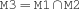
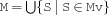

7.3 Standard Propagators
-
diff {FS.diff $M1 $M2 $M3}
-
intersect {FS.intersect $M1 $M2 $M3}
-
intersectN {FS.intersectN *Mv *M}
-
union {FS.union $M1 $M2 $M3}
-
unionN {FS.unionN $Mv $M}
-
subset {FS.subset $M1 $M2}
-
disjoint {FS.disjoint $M1 $M2}
-
disjointN {FS.disjointN *Mv}All elements of the vector Mv are pairwise disjoint.
-
distinct {FS.distinct $M1 $M2}
-
distinctN {FS.distinctN *MV}All elements of the vector Mv are pairwise distinct.
-
partition {FS.partition $MV $M}Mv is a partition of M; that is, Mv contains pairwise disjoint sets such that their union yields M.